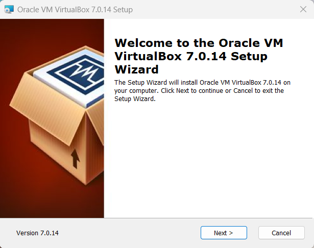
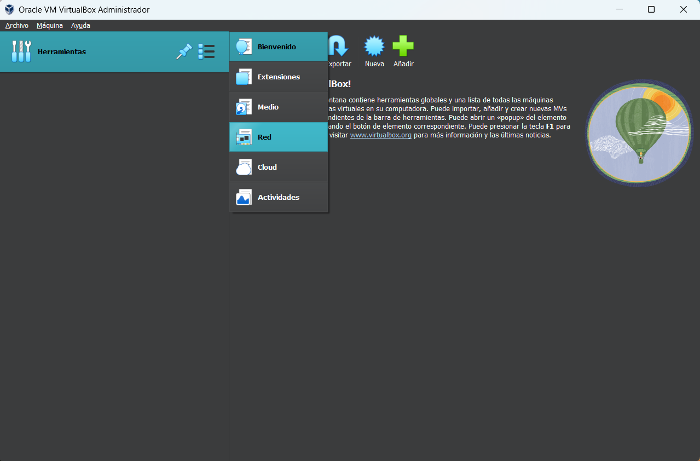
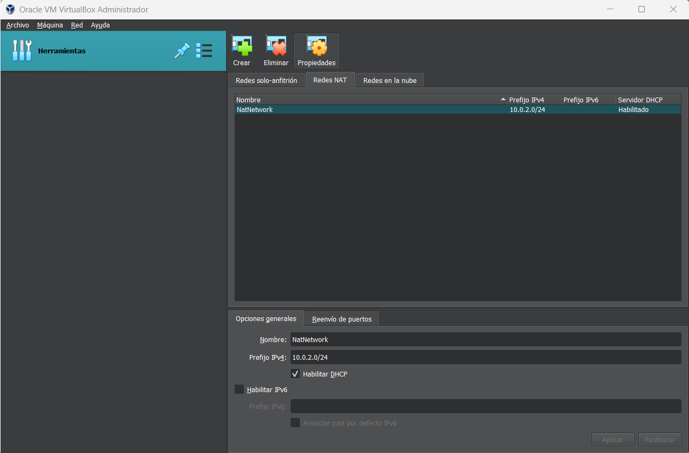

Oracle VM VirtualBox
Paso 1: Instalación de Oracle VM VirtualBox
Haremos click en el paquete instalador de Oracle VM VirtualBox para comenzar la instalación. A continuación el asistente nos mostrará los distintos paquetes que se van a instalar, y nos permitirá seleccionar y deseleccionar a nuestra necesidad. También nos invitará a instalar por nosotros las dependencias necesarias para ejecutar correctamente el programa. Una vez terminado este proceso, podremos abrir el programa.
Paso 2: Creación de una Red NAT virtual
A continuación, procederemos a crear una Red NAT virtual a través de la cual se interconectarán nuestras máquinas virtuales. Desde el menú principal, haremos click sobre el menú desplegable de “Herramientas” (el icono más a la derecha que muestra 3 cuadrados azules y 3 rayas negras) y seleccionaremos “Red”. Allí , haremos click sobre la pestaña “Redes NAT”. Y, dándole click a “Crear”, se nos creará automáticamente una red NAT.
A esta recién creada red NAT se le puede realizar algunas modificaciones, como cambiar el nombre de la red, el prefijo de dirección IPv4, activar o descativar un servidor DHCP o incluso establecer reenvío de puertos. Pero para el objetivo de este tutorial realizará su función correctamente con los parámetros predeterminados, así que dejaremos todo como está.